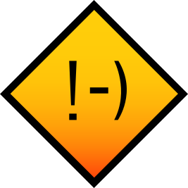

Welcome to My Portfolio
Welcome.
I'm Toon (also known as Tunix), a Cloud & Cybersecurity student based in Belgium with a passion for building and securing systems.
> School
I am pursuing formal education in Cloud and Cybersecurity, specializing in cloud technologies such as Docker, Kubernetes, and AWS. My focus spans both defensive security practices and offensive security research to understand threat landscapes. While I continue to explore both domains, my primary interest lies in cloud architecture and infrastructure security. The technologies that power modern systems have always fascinated me, and I remain committed to deepening my expertise.
Outside of coursework, I actively maintain a homeserver, working with containerization and virtualization technologies. Hands-on experience with infrastructure automation, particularly Docker and Proxmox, has reinforced the value of Infrastructure as Code practices.
I maintain a strong interest in reading across both technical and general literature. In an age of rapid technological change, I believe critical thinking and continuous learning are essential professional skills.
When seeking respite from technical work, I engage with tabletop gaming and collaborative storytelling, which provide valuable perspective and creative balance.
The world has always fascinated me, from how water gets turned to energy, to the magic everyday rocks we keep on our desks that make the world go around. In the field of IT this is no different, with how big the web is, there is always some new learning itch to scratch.
I love how you can always learn something new in IT, always find new people to teach you something new, it does not stop evolving and neither does my hunger for learning. knowing how computers work laid the foundation for my wanting to learn more, now I scour the web for whatever new technology I can find.
The kid in me is still fascinated by the magic of technology, and I want to be a part of creating that magic for others.

As a student, I have joined SIN (Student Information Network), an on campus student association aimed at getting IT'ers together, this helps me put into practice what I learned in the classroom, with the material available on a campus.
Part of this eagerness to join was getting to learn and experiment with IT in a way you just can't in a normal classroom setting.
While we do not have a webring yet, anyone interested in setting one up should contact me and I will get on it as soon as possible.